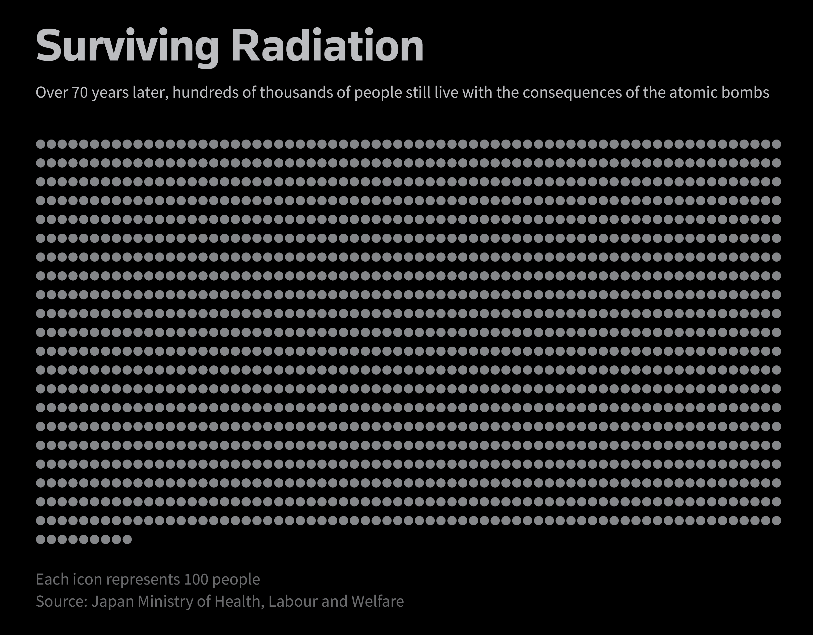

By Minami Funakoshi
Published on August 2, 2019
On August 6, 1945, at 8:15 am, the United States dropped the world’s first atomic bomb on Hiroshima. Buildings crumbled; homes exploded into flames; flesh melted. The heat branded the patterns of the kimono onto the skin of survivors. Some were vapourised, leaving nothing but a shadow etched onto stone.
Three days later, at 11:02 am on August 9, the United States dropped a second atomic bomb on the port city of Nagasaki.
The bombs killed thousands instantly. Others died slowly from burns, radiation sickness and other injuries in the months and years that followed.
There is no clear record of exactly how many people were killed. By the end of the year, the bombs had killed about 140,000 in Hiroshima and 74,000 in Nagasaki, according to the Atomic Heritage Foundation. At that time, Hiroshima was home to around 350,000 people, and Nagasaki was home to 240,000.
In 1957, twelve years after the bombings, the Japanese government began providing medical care to atomic bomb survivors, or hibakusha. Initially, a little over 200,000 received this aid. Only those who had been in the cities of Hiroshima, Nagasaki, and the neighbouring regions at the time of the bombings were recognised by the government as being hibakusha.
Over the years, the government expanded its criteria for who would qualify for aid. In 1960, the government recognised as hibakusha those who were within 2 kilometres from ground zero, and two years later, they expanded the requirement to include those who were within 3 kilometres. In 1965, they began recognising those who had entered the cities shortly after the bombings - usually to offer aid or to look for missing family members - as hibakusha if they had arrived within three days of the bombings.
Counting Atomic Bomb Survivors
By the end of 1945, 140,000 people had died in Hiroshima and 74,000 people had died in Nagasaki.
The death toll is in dispute. There is no precise record of how many people were killed.
August 6, 1945
The United States detonated the world’s first atomic bomb on Hiroshima
August 9, 1945
The United States detonated a second atomic bomb on Nagasaki
372,264
Peak number of registered
atomic bomb survivors
300,000
200,000
200,984
Japan begins keeping track of
atomic bomb survivors to give them aid
100,000
1945
1957
1970
1980
1990
2000
2010
2018
Sources: Japan Ministry of Health, Labour and Welfare; Atomic Heritage Foundation
The number of atomic bomb survivors recognised by the Japanese government steadily increased until 1980, when it peaked at 372,264. As the survivors aged, their numbers dwindled.

In 2018, the latest year for which government data is available, approximately 146,000 survivors were still alive.
Around 60 percent, or 91,000, were "type 1" hibakusha.
They were in Hiroshima city, Nagasaki city, or the neighbouring villages when the bombs hit.
About 20 percent, or 32,000, were irradiated by entering Hiroshima or Nagasaki cities within two weeks of the bombings.
These "type 2" hibakusha went to the cities to rescue survivors, provide medical care, and search for missing family.
About 10 percent of the survivors, or 16,000, were irradiated in other ways.
Some of these "type 3" hibakusha were rescue operators. Others were morticians who handled the bodies of those killed by the atomic bombs.
About 5 percent, or 7,000, are the children of atomic bomb survivors. They were in the womb when their parents were irradiated.
They include those who were born before May 31, 1946, in Hiroshima and June 3, 1946, in Nagasaki.